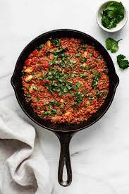

Chickpea Shakshukaß

Description:
A chickpea dish that works for breakfast, lunch or dinner. Chickpeas are the main source of protein. Can be served with any carb you choose, crusty bread or pita recommended.
Ingredients
- 1 Can Chickpeas
- 1 Jar Marinara sauce
- Bread or other Carb
- 1 Clove Garlic
- Spinach or Kale Bunch
Steps
- Add the garlic and chickpeas to a pan on medium heat.
- Put bread in the oven to toast.
- Wilt the spinach> or kale> in the pan.
- Add the marinara and simmer on medium high heat.
- Once thick, remove bread from oven and turn off the heat. Serve Shakshuka with the bread.